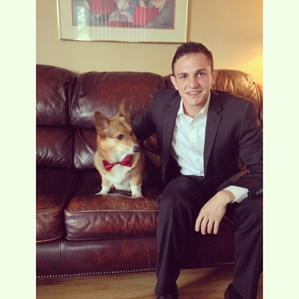
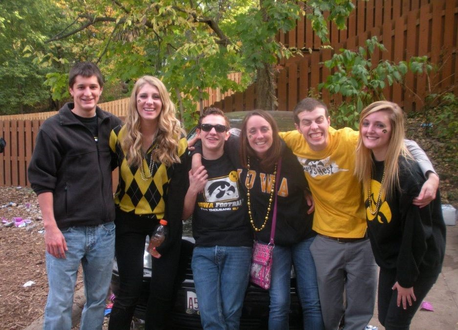

About Adam

It took twenty-one years to create who I am today. I was born and raised in the heartland of American, Des Moines, Iowa. I am the youngest of my family with an older brother, Joey, and an older sister, Emily. I am currently a student at the University of Iowa studying Business Analytics & Information Systems. My experience includes an internship at Principal Financial Group, as a Corporate Systems Support Intern. I have experience in SQL, HTML, CSS, Visual Basic, Javascript, and Python.
I am an Italian-American which means I have a strong commitment to my family, and an even stronger devotion to food. I basically eat pasta for breakfast, lunch, and dinner. I am addicted to coffee. By now, it's probably in flowing through my arteries. I have two dogs, Winston and Theo. They are both Welsh Corgis. Theo is only a year old and couldn't get any more wild.
I am currently training for the Chicago Marathon on October 13th. My dream is to qualify for the Boston Marathon and eventually run every marathon in the World Marathon Majors. There are six races in the cities of Tokyo, Chicago, Boston, New York, London, and Berlin.

My friends and I at a Iowa Football Game
Favorite Things to Do
- Coffee
- Running
- Puppies
- Becks Beer
- Food
- Traveling
Food
"First We Eat, Then We Do Everything Else." - M.F.K. Fisher
- Wandas (Italian cookies)
- Pasta
- Salmon
- Sushi
- Carnitas
- Enchiladas
- Tiramisu
- Hummus
- Pita